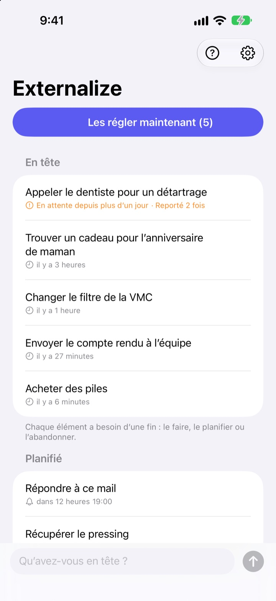
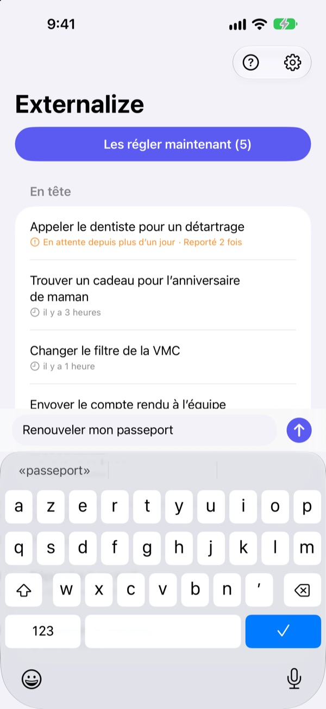
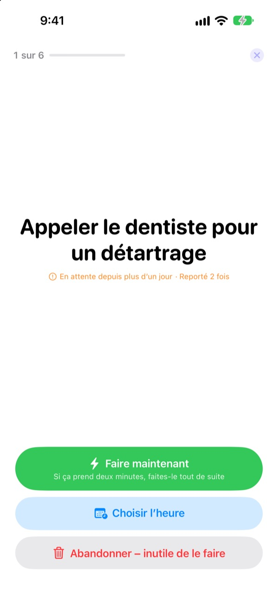
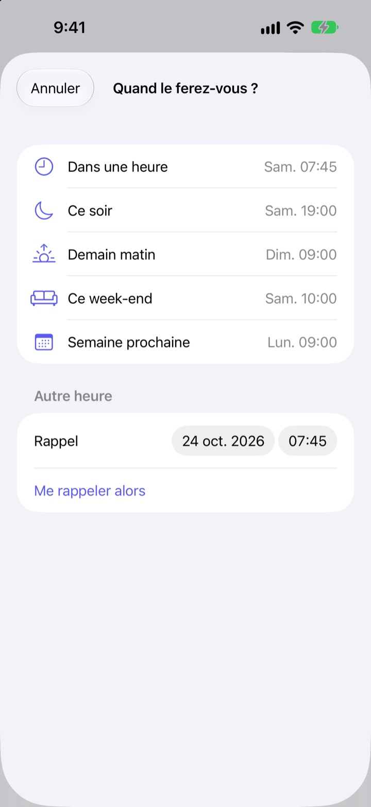

Notez-le maintenant.
Réglez-le ce soir.
« Ah oui, il faut que je… » Sortez-le de votre tête en quelques mots et n’y pensez plus. Le soir, réglez ce qui reste, un élément à la fois.
Toutes les fonctions sont gratuites. Ni compte, ni connexion.

Essayez ici
Notez ce qui vous trotte dans la tête, ou touchez un exemple. Puis appuyez sur « Les régler maintenant » et donnez une issue à chaque élément.
Même les petites choses prennent de la place
Sous la douche, au feu rouge, juste avant de s’endormir : « Il faut que je fasse ce truc. » Rien sous la main pour le noter, alors on s’y accroche, et ce qu’on était en train de faire en pâtit. Les apps de tâches réclament d’abord une liste et une échéance : même noter devient une corvée.
Trois secondes, puis on oublie
Ouvrez l’app et tapez dans la ligne en bas de l’écran. Pas de liste, de dossier ni d’échéance à choisir.
Touchez le widget de l’écran verrouillé, l’app s’ouvre sur une ligne vide. Dites Mémorise dans Externalize à Siri, ou placez-le sur le bouton Action, et c’est enregistré sans ouvrir l’app.

Le soir, un élément à la fois
S’il reste quelque chose, un seul rappel arrive à 21 h. Rien en attente, aucun rappel.
Quand vous commencez, les éléments s’affichent un par un, en grand. Choisissez « Faire maintenant », « Choisir l’heure » ou « Abandonner », et le suivant apparaît. Si ça prend deux minutes, lancez le minuteur et faites-le tout de suite.

Rien ne traîne
Choisissez « Dans une heure », « Ce soir », « Demain matin », « Ce week-end » ou « Semaine prochaine », et l’élément revient à ce moment-là. Depuis la notification, touchez directement « Fait », « Demain matin » ou « Abandonner ».
Ce qui attend depuis plus d’un jour, et ce que vous repoussez sans cesse, est signalé : ce qui glisse toujours saute aux yeux.

Trois étapes pour commencer
- 1
Notez
Quelques mots dans l’app, sur le widget de l’écran verrouillé ou avec Siri, au plus simple.
- 2
Autorisez les notifications
La question est posée une fois, à votre première note. Elles servent au rappel du soir et aux heures choisies.
- 3
Réglez le soir
Touchez le rappel ou « Les régler maintenant » et donnez une issue à chaque élément.
Directement depuis la liste
- Toucher un élément
- choisir « Fait », « Choisir l’heure » ou « Abandonner »
- Balayer vers la droite
- Fait (l’élément quitte la liste)
- Balayer vers la gauche
- Abandonner, ou « Planifier » pour choisir l’heure
- Les régler maintenant
- passer en revue ce qui reste, un par un
- Mémorise dans Externalize
- le dire à Siri, sans ouvrir l’app
- Réglages ▸ Rappel du soir
- changer l’heure ou le désactiver
Quand vous planifiez, « Ce soir » correspond à 19 h, « Demain matin » à 9 h, « Ce week-end » au samedi 10 h et « Semaine prochaine » au lundi 9 h. Vous pouvez aussi choisir n’importe quelle date et heure.
Questions fréquentes
Puis-je noter quelque chose sans ouvrir l’app ?
Oui. Dites Mémorise dans Externalize à Siri : il vous demande quoi noter et l’enregistre. Attribuez le raccourci « Noter » au bouton Action dans Réglages, et une pression suffit.
Comment ajouter le widget de l’écran verrouillé ?
Maintenez le doigt sur l’écran verrouillé, touchez Personnaliser puis l’écran verrouillé, touchez la zone des widgets et ajoutez Externalize. Un toucher ouvre une ligne vide, et il affiche le nombre d’éléments restants. Il existe aussi un petit widget pour l’écran d’accueil.
Puis-je changer ou désactiver le rappel du soir ?
Touchez la roue dentée en haut à droite ▸ Rappel du soir pour changer l’heure ou le désactiver. Il est réglé sur 21 h et reste muet les jours où rien n’est en attente.
Je ne reçois pas de notifications.
Si les réglages d’Externalize indiquent que les notifications sont désactivées, touchez le bouton affiché pour les activer dans les Réglages de l’iPhone. Les jours où rien n’est en attente, il n’y a pas de rappel du soir : c’est normal.
Comment revient un élément planifié ?
Une notification arrive à l’heure choisie. Maintenez-la pour choisir directement « Fait », « Demain matin » ou « Abandonner ». Sans réponse, il retourne dans « En tête » et vous le réglez la fois suivante.
Puis-je récupérer un élément fait ou abandonné ?
Non. Les éléments réglés quittent la liste et il n’y a pas d’archive. En cas de doute, choisissez une heure plutôt que d’abandonner.
Mes notes me suivent-elles sur un nouvel iPhone ?
Non. Tout reste sur cet appareil et n’est jamais envoyé vers iCloud ni vers un serveur. Supprimer l’app supprime aussi les notes.
Sur quels appareils fonctionne-t-elle ?
Sur iPhone, avec iOS 17 ou version ultérieure.
Une question ou un bug ? Écrivez à leeo@kakao.com. Indiquer votre modèle d’iPhone et la version d’iOS nous aide à regarder plus vite.